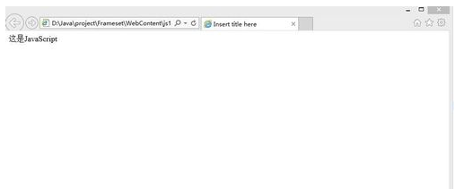
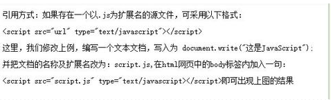

下滑这里查看更多内容
javascript简介
JavaScript一种直译式脚本语言，是一种动态类型、弱类型、基于原型的语言，内置支持类型。它的解释器被称为JavaScript引擎，为浏览器的一部分，
广泛用于客户端的脚本语言，最早是在HTML（标准通用标记语言下的一个应用）网页上使用，用来给HTML网页增加动态功能。在1995年时，由Netscape公司
的Brendan Eich，在网景导航者浏览器上首次设计实现而成。因为Netscape与Sun合作，Netscape管理层希望它外观看起来像Java，因此取名为JavaScript。
但实际上它的语法风格与Self及Scheme较为接近。为了取得技术优势，微软推出了JScript，CEnvi推出ScriptEase，与JavaScript同样可在浏览器上运行。
为了统一规格，因为JavaScript兼容于ECMA标准，因此也称为ECMAScript。
-
基本特点
JavaScript是一种属于网络的脚本语言,已经被广泛用于Web应用开发,常用来为网页添加各式各样的动态功能,为用户提供更流畅美观的浏览效果。通常JavaScript脚本是通过嵌入在HTML中来实现自身的功能的。
1.是一种解释性脚本语言（代码不进行预编译）。
2.主要用来向HTML（标准通用标记语言下的一个应用）页面添加交互行为。
3.可以直接嵌入HTML页面，但写成单独的js文件有利于结构和行为的分离。
4.跨平台特性，在绝大多数浏览器的支持下，可以在多种平台下运行（如Windows、Linux、Mac、Android、iOS等）。 -
日常用途
1.嵌入动态文本于HTML页面。
2.对浏览器事件做出响应。
3.读写HTML元素。
4.在数据被提交到服务器之前验证数据。
5.检测访客的浏览器信息。
6.控制cookies，包括创建和修改等。
7.基于Node.js技术进行服务器端编程。
javascript语法
- 运算符：有7类运算符，分别为：
- 赋值运算符（=，+=，-=，*=，/=，%=，«=,»=,
|=,&=); - 算术运算符（+, -,*,/,%,++,–);
- 比较运算符（>,<,<=,>=,=,!=);
- 逻辑运算符（
||,&&,!); - 条件运算符（?:);
- 位运算符（
|, & , « ,»,~,^); - 字符串运算符（+).
- 赋值运算符（=，+=，-=，*=，/=，%=，«=,»=,
- 表达式：有4类表达式，分别为：
- 赋值表达式，
- 算术表达式，
- 布尔表达式，
- 字符串表达式。
- 变量：变量有以下类型：
- object(对象）,
- array(数组）,
- number(数），
- boolean(布尔值）,
- null(空值)，
- undefined(没有定义和赋值的变量），
- string(字符串）。
变量定义用var关键字。
javascript使用方法
通过可以装饰js脚本嵌入到网页中，如：
<script language="javascript">
document.write("这是JavaScript");
</script>
输出结果：

引用方式：
